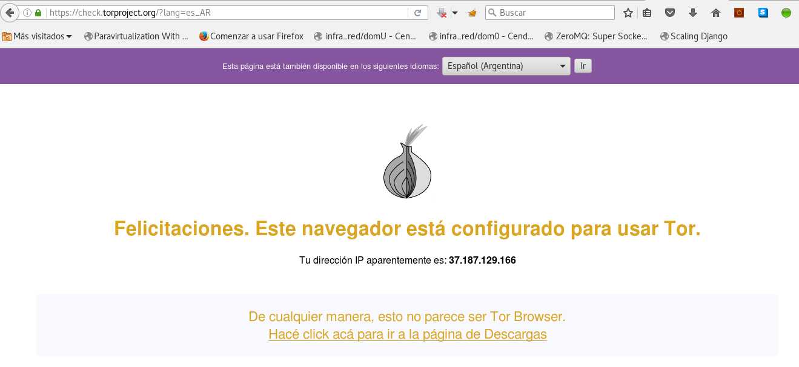

Usar tor desde privoxy en Debian Stretch
Posted on mar 06 junio 2017 in Tutorial de Linux • 2 min read
Privoxy es un proxy web que se usa normalmente con tor.
En el artículo anterior se explica como instalar tor. Ahora se usará privoxy como proxy para tor.
Para instalar simplemente se usa apt:
#apt-get install privoxy
En privoxy se define el sock forward quien será el puerto e IP donde se está ejecutando tor (localhost y puerto 9050), se edita el archivo /etc/privoxy/config y se agrega la siguiente línea:
forward-socks4a / localhost:9050 .
Se reinicia privoxy:
# /etc/init.d/privoxy restart
[ ok ] Restarting privoxy (via systemctl): privoxy.service.
Se revisa que esté funcionando:
# /etc/init.d/privoxy status
● privoxy.service - Privacy enhancing HTTP Proxy
Loaded: loaded (/lib/systemd/system/privoxy.service; enabled; vendor preset: enabled)
Active: active (running) since Tue 2017-06-06 22:50:00 -04; 1s ago
Docs: man:privoxy(8)
https://www.privoxy.org/user-manual/
Process: 20044 ExecStopPost=/bin/rm -f $PIDFILE (code=exited, status=0/SUCCESS)
Process: 20082 ExecStart=/usr/sbin/privoxy --pidfile $PIDFILE --user $OWNER $CONFIGFILE (code=exited, status=0/SUCCESS)
Main PID: 20083 (privoxy)
Tasks: 1 (limit: 4915)
Memory: 1.3M
CPU: 8ms
CGroup: /system.slice/privoxy.service
└─20083 /usr/sbin/privoxy --pidfile /var/run/privoxy.pid --user privoxy /etc/privoxy/config
jun 06 22:49:59 grievous systemd[1]: Starting Privacy enhancing HTTP Proxy...
jun 06 22:50:00 grievous systemd[1]: Started Privacy enhancing HTTP Proxy.
En firefox se instala foxy proxy standar:
Se configura para usar el proxy localhost y puerto 8118:

Al verificar con la siguiente URL el uso de tor https://check.torproject.org/?lang=es_AR, se tiene lo siguiente:

Al lado izquierdo de la caja de busqueda está el icono de foxyproxy, el cual se encuentra activo al momento de verificar si se está usando tor.
¡Haz tu donativo! Si te gustó el artículo puedes realizar un donativo con Bitcoin (BTC) usando la billetera digital de tu preferencia a la siguiente dirección: 17MtNybhdkA9GV3UNS6BTwPcuhjXoPrSzV
O Escaneando el código QR desde la billetera: